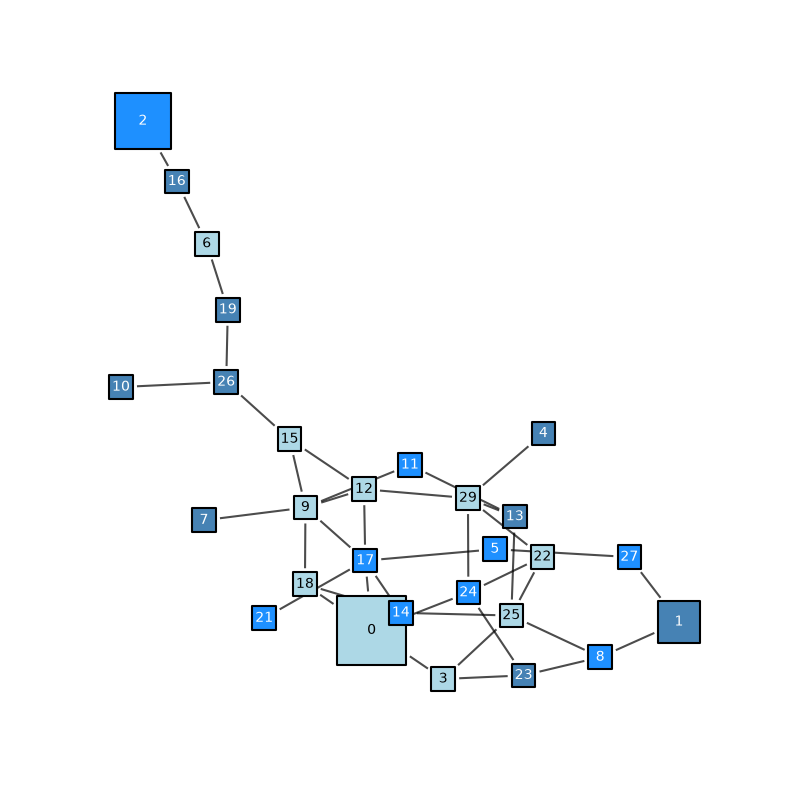
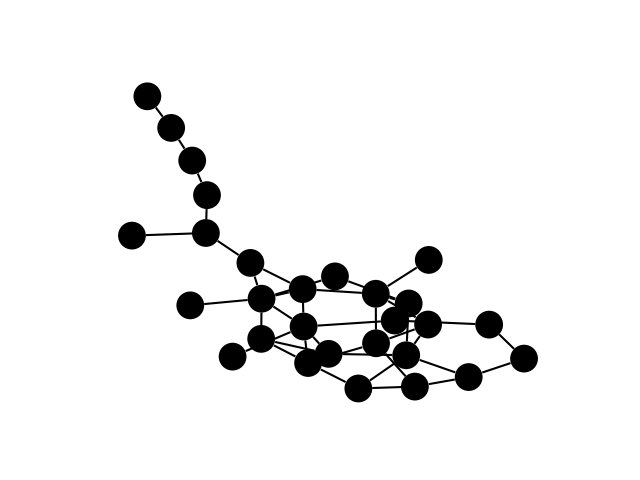

Note
Go to the end to download the full example code.
iplotx#
iplotx (https://iplotx.readthedocs.io/) is a network visualisation library
designed to extend the styling options for native NetworkX objects. It uses
matplotlib behind the scenes, just like NetworkX’s internal functions, so
it is compatible with all examples in the gallery while offering additional
choices to customise your visualisation.
from collections import defaultdict
import matplotlib.pyplot as plt
import networkx as nx
import iplotx as ipx
G = nx.dense_gnm_random_graph(30, 40, seed=42)
# Get largest connected component
components = nx.connected_components(G)
largest_component = max(components, key=len)
H = G.subgraph(largest_component)
# Compute layout
layout = nx.kamada_kawai_layout(H)
ipx.network(
H,
layout,
# Constant styling
node_marker="s",
node_edgecolor="black",
node_linewidth=1.5,
# Per-element styling, with fallback
node_size=defaultdict(lambda: 17, {0: 50, 1: 30, 2: 40}),
# Cycling styling
node_facecolor=["lightblue", "steelblue", "dodgerblue"],
node_label_color=["black", "white", "white"],
# Add node labels
node_labels=True,
# Edge styling
edge_alpha=0.7,
edge_shrink=3,
# Custom drawing order (nodes on top)
edge_zorder=2,
node_zorder=3,
# Custom axes-level options
margins=0.1,
figsize=(8, 8),
)
plt.tight_layout()

Below is a minimal example with default settings:
ipx.network(H, layout)

[<iplotx.network.NetworkArtist object at 0x7fc4d0453200>]
Total running time of the script: (0 minutes 0.298 seconds)